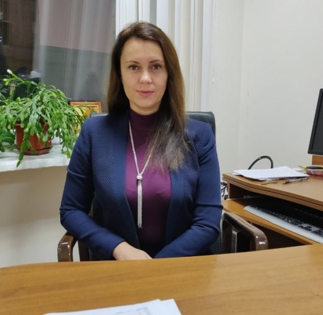

Ульяновська Юлія Вікторівна
Завідувач кафедри, доцент, кандидат технічних наук
У 1997 році закінчила Дніпропетровський національний університет за спеціальністю математик, викладач математики.
У 2005 році присуджено науковий ступінь кандидата технічних наук спеціальністю 05.13.06 – автоматизовані системи управління та прогресивні інформаційні технології
(тема дисертації «Моделі та методи обробки даних в єдиній автоматизованій інформаційній системі митної служби»).
Дисципліни, що викладає:
- Комп'ютерна дискретна математика
- Сучасні методи теорії інформації та кодування
- Теорія алгоритмів
- Теорія прийняття рішень
- Інтелектуальні системи підтримки прийняття рішень
- Методи та системи штучного інтелекту
Сфера наукових інтересів:
Інтелектуальні автоматизовані системи, методи обробки нечітких та неповних даних.
Організаційна робота:
- З 2018 року: в.о. завідувача кафедри інформаційних систем та технологій Університету митної справи та фінансів
- З 2019 року: завідувач кафедрі комп’ютерних наук та інженерії програмного забезпечення
- 2018 р. - заступник відповідального секретаря приймальної комісії з вивчення документів вступників, які мають пільги на зарахування поза конкурсом (наказ № 34 від 20.02.2018 р.)
- 2018 р.: робота у складі журі міжнародного конкурсу візуальних презентацій «День острова Токто», який проводився за участі Посольства Республіки Кореї в Україні 04.06.2018 р.
- 2019 р. - заступник відповідального секретаря приймальної комісії (наказ № 174 від 04.12.2019)
- З 2021 року виконує обов’язки куратора групи К 21-1м.
- З 2022 року виконує обов’язки куратора груп К 22-1м та К 22-2м.